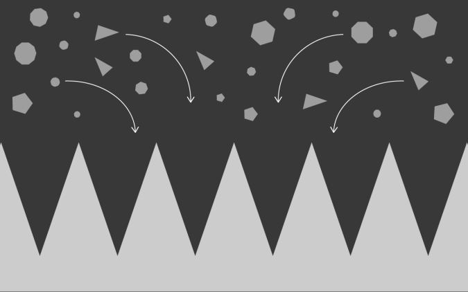
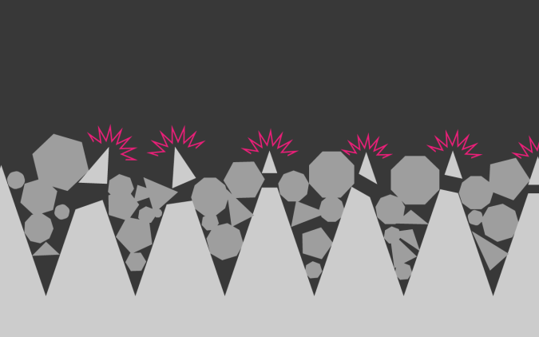
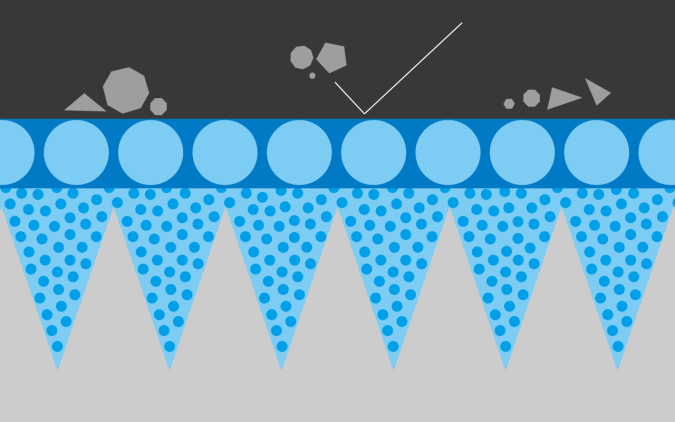
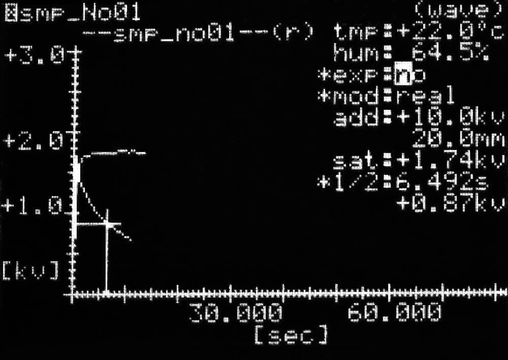
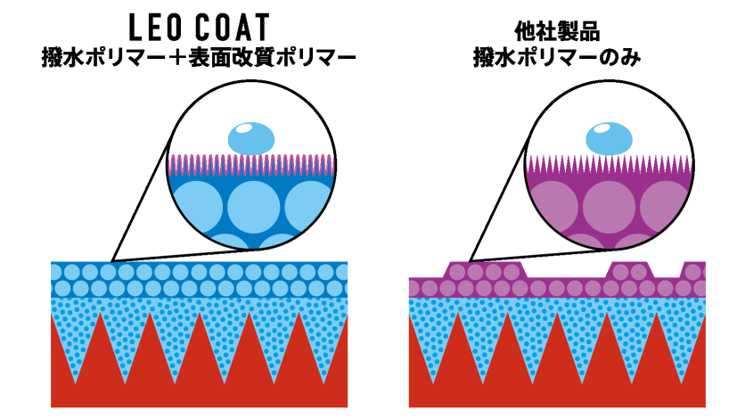
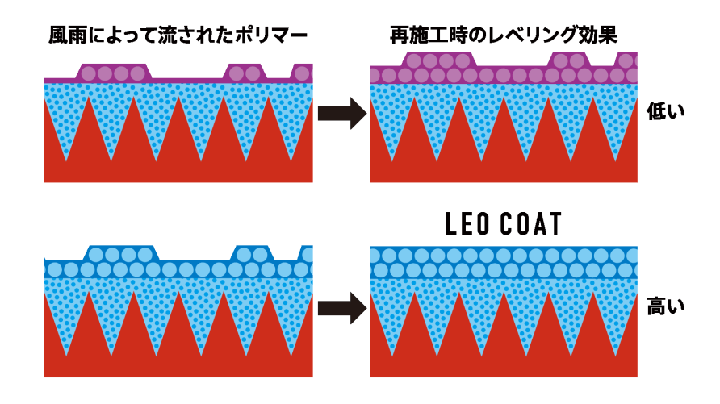
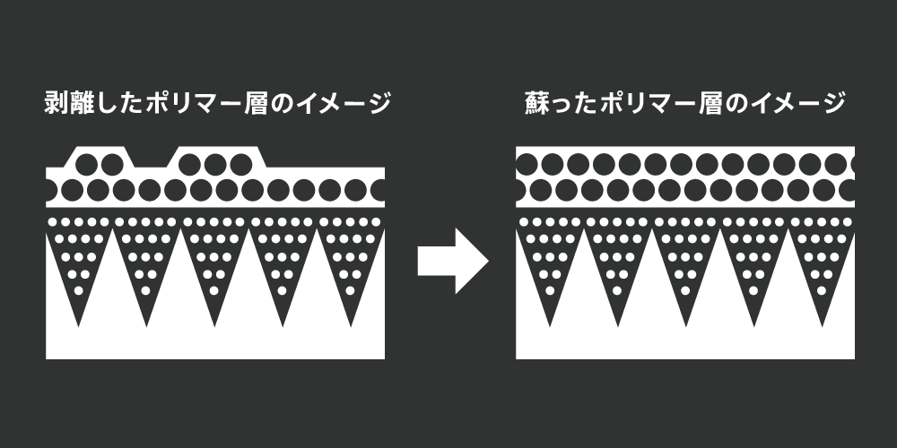
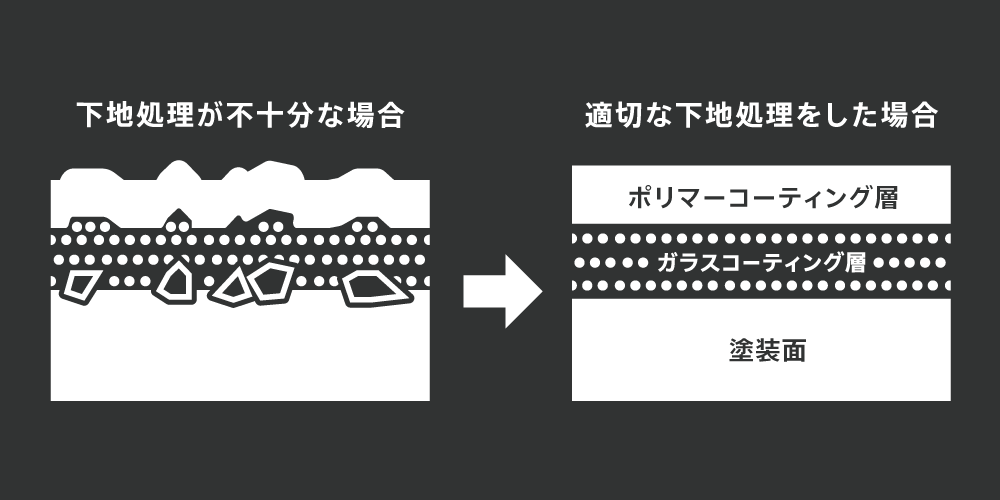

メンテナンス製品一覧
ポリマーコーティングスプレー
ワックスのような光沢と手触りのポリマーをメンテナンスで使いやすくしました。洗車毎にご利用頂ける100mlで洗車後に重ねて利用して頂くことでポリマー層が持続し、撥水・防汚効果を高められます。
ポリマースプレー詰替え用
LEO COATのポリマーコーティングスプレーをパウチタイプの詰替え用にしました。必要最小限のパウチにすることで環境にも配慮されています。100mlのスプレーボトルに詰め替えてご利用下さいませ。
スペシャルシャンプースプレー
LEO COATのシャンプーをメンテナンスで使いやすくした製品です。専用粘土バフとご利用頂くか、シャンプー単体でもボディの汚れを落とします。容量アップで100mlサイズにしました。洗車の際にご利用下さい。
※ 注意 ポリマーはフローリングの床などに付着すると、滑りやすくなり転倒の危険があります。また、ステッカー類を貼る箇所に施工すると剥がれやすくなるのでご注意ください。
効果比較
LEO COATのポリマーコートは、他社製の弱点を克服。さらに防汚性などの効果も。

綺麗を保つ
綺麗な状態を長く保つには、ポリマーコーティングで定期的なメンテナンスを行うと効果的です。LEO COATのポリマーは粒子が小さいものを採用。さらに静電気抑制効果で汚れにくく、撥水効果で水を弾くのに抜群の手触りです。
汚れは静電気が引き寄せます
LEO COATのポリマーコーティングは、静電気抑制効果によって自浄作用を向上。
雨による自浄作用や、高速道路を走行時の虫の付着も低減し、これらの汚れも水洗いで簡単に除去します。
- 
-
ボディは常に静電気をまとっているので、チリや埃、鉄粉など、様々な種類の汚れを引き寄せます。さらに虫や鳥糞などの汚れが存在します。
- 
-
塗装面の小さな凸凹に汚れが蓄積、乾燥時に肥大化する事で塗装面の破断、破壊が行われ、大切な愛車のボディは手の施しようの無い状態に。
- 
-
LEO COATの2層コートは塗装面の凸凹に透明なガラスを定着させ、静電気抑制ポリマーで汚れの吸着を激減。ポリマーは撥水なのに抜群の手触りです。
放電性能を科学的に実証
第三者機関の試験場にてオネストメーターを使用しました。試料を帯電させて静電気が半分になるまでの時間を測定します。
この時間が短いほど、帯電しにくく放電しやすいということです。今回は帯電しやすいアクリル板を検体として使用しました。この試験によって汚れの引き寄せを低減できる事を再確認できました。
-
ポリマー未施工
グラフが表すように、60秒以上経過しても、ほぼ放電していない状態です。
- 
-
ポリマー施工済
帯電の数値がわずか6.4秒で半分になりました。特殊ポリマーの高い放電効果を再確認できました
ポリマーコートのこだわり
LEO COATでは、すべての液剤にこだわりを持って製造しています。
ポリマーコーティングは、撥水の弱点である肌触りにもこだわりました。
また、ポリマーコートの再施工時に力を発揮する、高いレベリング性能で、美しくポリマー層を定着させることで、高い施工性を実現しました。
- 
-
気持ちの良い手触りの秘密
LEO COATのポリマーコーティングは、撥水ポリマーに表面改質ポリマーを配合することで、撥水なのに滑らかな手触りを実現。スルスルとした肌触りで、いつまでも触っていたくなる感触です。
是非一度体感してみてください。
- 
-
高いレベリング性能
レベリング性能とは、下地が凸凹の状態でも、表面が均一化される性能です。このレベリング性能が高いと、施工時のムラが発生しにくくなるだけでなく、メンテナンスを怠って”まだら”にポリマーがとれた状態に施工しても、綺麗に仕上げることができます。
さらに詳しく
LEO LEO COATでは高品質な原料を使用しているので、重ねがけをしても美しく定着します。洗車毎に行うと、ポリマー層を成長させることが可能で、より汚れにくく。
汚れが酷い場合は、粘土バフと専用シャンプーで下地処理を行って下さい
- 
-
ポリマーは重ねがけで効果大
浸透型のガラスコート層は塗装面と結合していて剥離することはありませんが、撥水型ポリマー層は雨や洗車によって、徐々に剥がれ落ちていきます。
- 
-
汚れが酷い場合は粘土バフ
適切な下地処理を行うと、ガラスコーティングの定着も、ポリマーコーティングの耐久性も向上し、美しい輝きと撥水効果が長持ちするようになります。